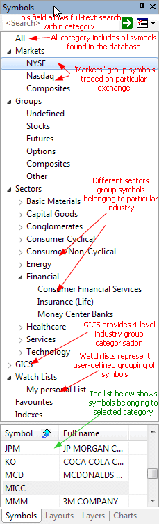

In this window, we have a list of available symbols and categories. Selecting one of them will refresh all opened charts and update information windows. This selection is global for the program, i.e., all symbol functions will reference the symbol selected in this window.
 | Symbols window is divided into three
parts: The search box allows you to perform full text searches (including wildcard matching) against symbol and full name within the selected category. For example, if you select "Technology" sector and type A* (letter 'A' and wildcard character *), the symbol list will show all symbols belonging to the Technology sector with a symbol or full name beginning with the letter 'A'. Another example would be typing *-A0-FX - this will return all forex symbols in the eSignal database (those ending with -A0-FX substring). The category tree (see the picture) shows different
kinds of categories. A single symbol belongs to many categories at the same time. For example, AAPL (Apple Inc.) will belong to:
and may also belong to several watch lists and favorites categories. All at the same time. That's why one symbol will appear in many leaves of the workspace symbol tree. Now, if you delete the symbol, it will of course disappear from all categories because you have deleted the symbol itself, not its assignment to a category. |